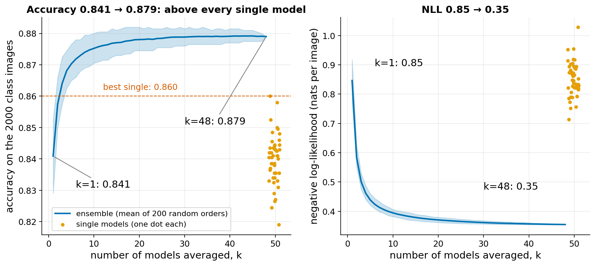
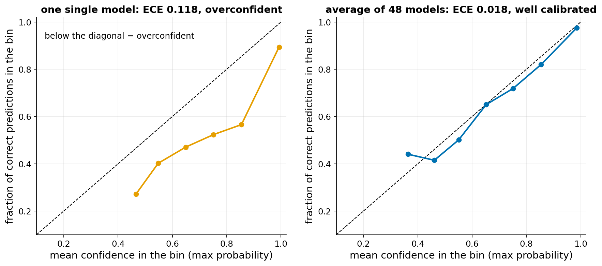
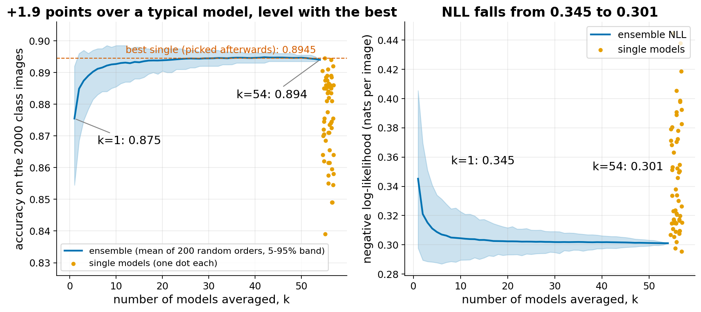
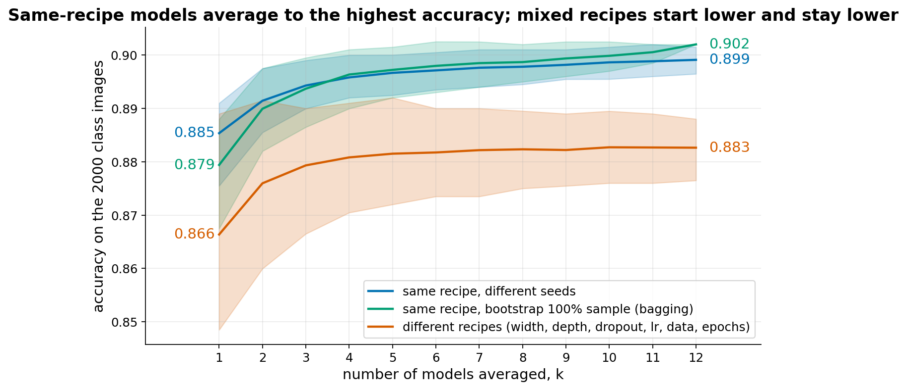
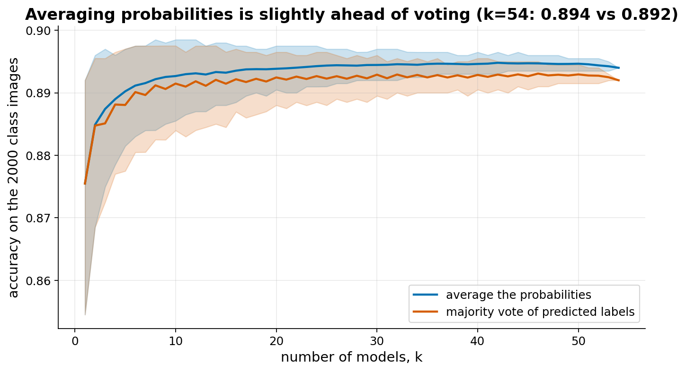
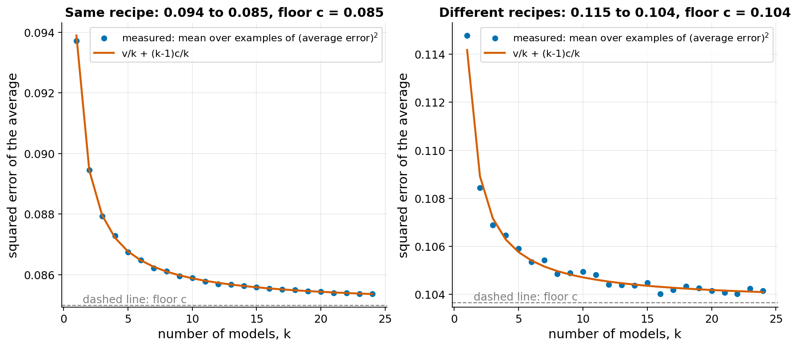
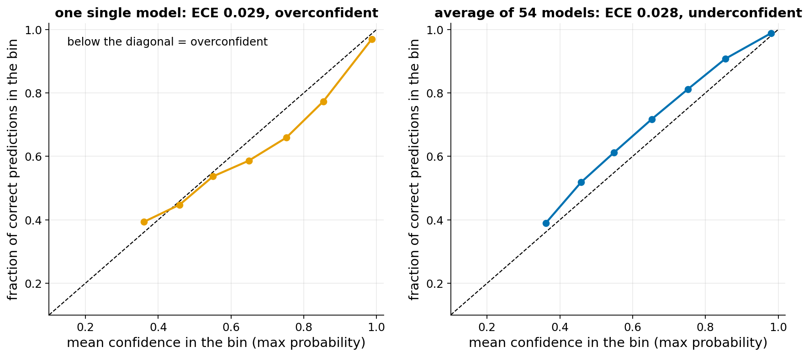
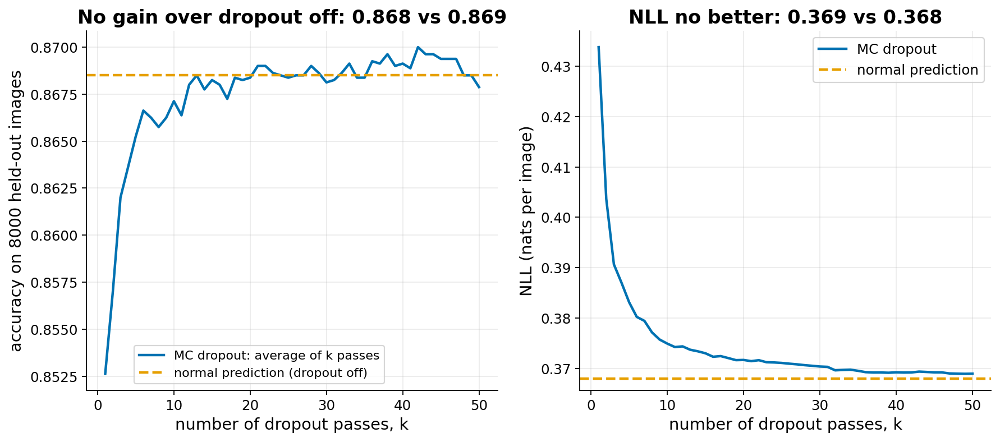

Class ensemble
The idea
Train several models on the same task. Each makes some mistakes. If the mistakes of two models were completely independent, averaging their outputs would cancel part of them. If the mistakes were identical, averaging would change nothing. Reality is in between.
Goodfellow (section 7.11) makes this precise. Let each model i have an error on an example. Call v the average squared error of one model (the error variance) and c the average product of the errors of two different models (the covariance). Then the expected squared error of the average of k models is v/k + (k-1)c/k. In words: the part of the error that is specific to each model shrinks like 1/k. The part that all models share, c, never shrinks. With k large the error tends to c. So an ensemble helps only as much as the models differ.
Bagging makes models differ by training each one on a different random sample of the training set, drawn with replacement. Seeds-only ensembles use the same data and the same recipe, and change only the random initialisation and the order of the mini-batches. For neural networks this is often enough (Goodfellow 7.11): training from different random starts usually ends in different solutions, and these make partly different mistakes. Combining different hyper-parameters (width, depth, dropout) adds more variety, but it also adds weaker members.
Dropout (section 7.12) can be seen as training a huge number of sub-networks that share weights. At test time one normal pass with the weights scaled by the keep probability (the weight scaling rule) approximates the average of all of them; strictly, it approximates their normalised geometric mean, and the approximation is exact only for a network without hidden non-linear layers. Keeping dropout on at test time and averaging many random passes (MC dropout) is a sampled estimate of the ordinary (arithmetic) average.
Two ways to combine models: average the probabilities, or take a majority vote of the predicted labels. Averaging keeps the confidence information, so it is expected to be at least as good.
References:
- Goodfellow, Bengio, Courville, Deep Learning, chapter 7 (sections 7.11 and 7.12)
- Lakshminarayanan, Pritzel, Blundell (2017), Simple and Scalable Predictive Uncertainty Estimation using Deep Ensembles
What students would do
- Load FashionMNIST and look at a few images (5 minutes).
- Draw a random subset of 3000 training images with a personal seed (student number plus model index). Train a small MLP (256-256) for 40 epochs. It reaches about 100% accuracy on its 3000 images and about 83% on unseen images, with very confident outputs. Print its accuracy and its average confidence on the fixed 2000-image class evaluation set.
- Train a second model with another seed, so another subset. Average the two probability matrices by hand. Check the accuracy of the average: it is usually higher than both (in the prototype, on average 0.841 for one model and 0.858 for a pair).
- Submit the probability matrix (2000 x 10) of each model. The student's accuracy is shown as a dot.
- Watch the class plot: ensemble accuracy and NLL against the number of submitted models k, with every individual model as a dot. Later, a second view: reliability diagram of one model against the class average.
Everyone uses the same architecture and training settings. Only the seed, and therefore the training subset, changes. This is bagging by random subsets (drawn without replacement here).
Questions for the discussion:
- Why does the curve rise quickly at the beginning and then flatten? (Link to
cin the formula.) - Each model is 100% right on its own 3000 images and still makes mistakes on new ones. Why is the average better than every dot?
- When a single model is at least 90% sure (85% of the images; on average it then says 99%), it is right only 89% of the time. Why is the confidence of the average closer to its accuracy?
- Control experiment: what if all students use the same 3000 images and change only the init seed? (Prototype: the gain falls to about a third. Where does the diversity come from?)
- What would you lose by deploying 50 models instead of 1?
What our prototype found
Two designs were simulated on local CPU. Design A (main): 48 models, each trained 40 epochs on its own random 3000-image subset. Design B (contrast): 24 models, each trained 5 epochs on all 60000 images, only the seed differs. "Class evaluation set" is 2000 test images; "held-out" is the other 8000 test images.


Control, same 3000 images for every model and only the init seed different (24 models): single 0.826, ensemble 0.836 on held-out, ECE 0.124 to 0.087. The gain is about a third of design A. Different training data per member is what makes the models differ.
Error formula (error = 1 minus the probability given to the true class, class set): design A has v=0.139 and c=0.099, so c/v=0.71. Design B has c/v=0.91. A lower c/v means a larger possible gain; this is what the formula predicts and what we see.
Design B (short training on all data) in detail:






| Group (models) | Mean single, held-out | Best single, held-out | Ensemble, held-out |
|---|---|---|---|
| Design A: own 3000-image subset, 40 epochs (48) | 0.8281 | 0.8389 | 0.8658 |
| Control: same 3000 images, seed only (24) | 0.8257 | 0.8330 | 0.8364 |
| Design B: all data, 5 epochs, seeds (24) | 0.8775 | 0.8861 | 0.8911 |
| Bagging (12) | 0.8708 | 0.8759 | 0.8894 |
| Mixed recipes (30) | 0.8556 | 0.8832 | 0.8746 |
| Seeds + mixed (54) | 0.8653 | 0.8861 | 0.8873 |
Design A gains 3.8 points over the mean member and 2.7 over the best. Among the short-training groups, the seeds-only group beats its own best member by 0.5 points and the bagging group by 1.4 points. The mixed-recipe group does not beat its best member.